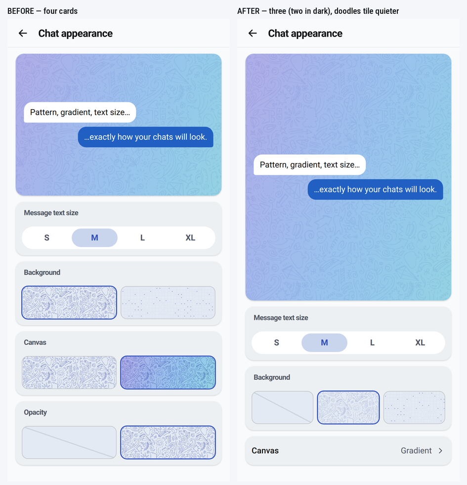
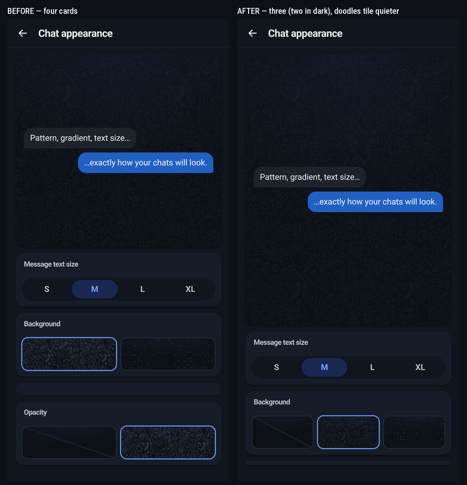
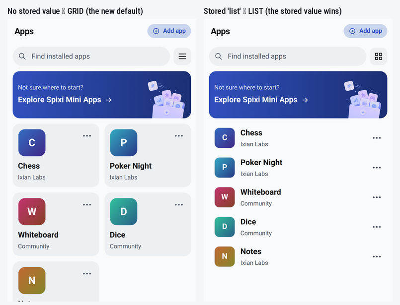
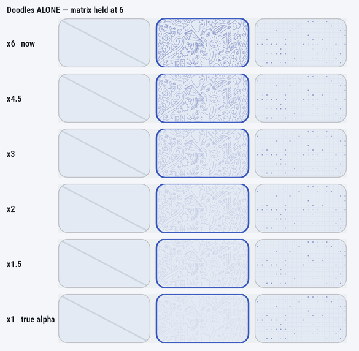
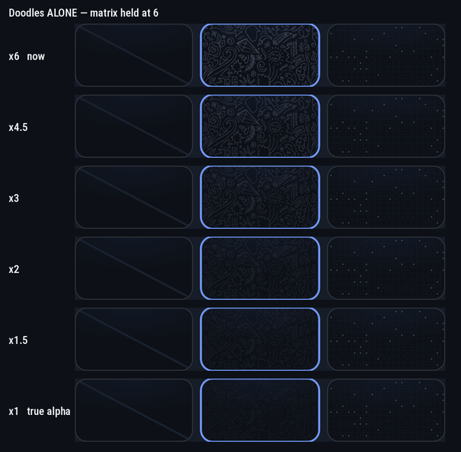
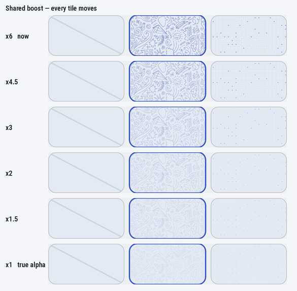
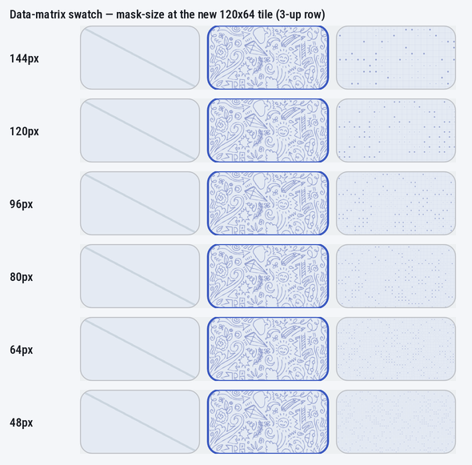
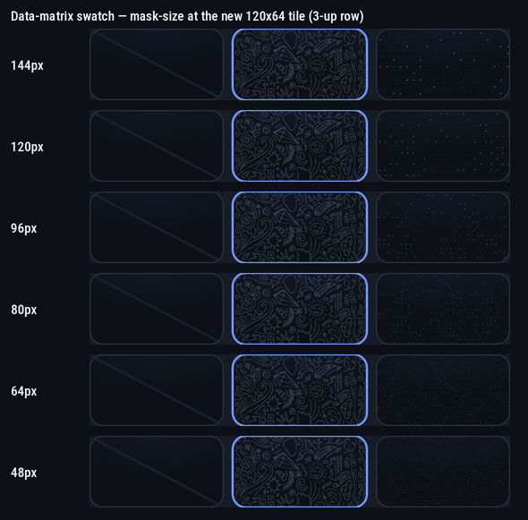

0 pass0 fail
0 n/a0 not scored
copied
Before you start
Build with F5, never a bare dotnet build — the VS Deploy
step is what stages Resources\Raw\**, and without it the app serves the
previous build's shells looking completely normal (#663/#768). C# changed this batch, so
this is a real build. Not Rebuild Solution (android RocksDbSharp).
The generators already ran on your machine through the bridge and the gates are green.
Re-run them before committing as the pre-commit confirmation — full block in
docs/f5-checklist-session-m.md §0. Expected:
bundle 321 · shells 18 · smoke BASELINE OK 4087 / the 3 known (#136 · M5 · B3)
locales ALL CLEAN 786 · i18n-lint OK · pseudo 9/9 · cs-syntax 141 + 1 known gap
extract-strings --check OK · build-shells --check OK · build-legal-docs --check OK
What it looks like
Rendered on the real built shells, 432×900 @2.5, Android UA — the harness
boots them from file:// exactly as the device does.
Chat appearance, before and after — light. The defect you named is on the left:
Background, Canvas and Opacity are three near-identical tile pairs.

Dark — two cards, the Canvas row is absent. Your ruling.

Apps — the default and the stored value.

A · Chat appearance (#783) — Account → Chat appearance
B · Apps layout (#784) — Apps tab
C · Present-on-paint (#785) — nothing to look for except sooner
This change can only make a page appear earlier — the 120 ms timer is
still there as a backstop. So the only way it can be wrong is by presenting a page
before it is filled. That is what C1–C6 are looking for.
Two dials I did not take — one word each
① The card is still called “Canvas”. The spec's paraphrase was
“Colour”; you never said either word. A rename is 13 locales, so it is yours.
② The empty tile is called “None”. A new string —
patternOff (“Off”) was already translated but reads as the control
being off under a Background heading. Say “Off” and it reverts with no locale cost.
③ The doodles tile is quieter — ×3 where the matrix stays ×6.
You asked for it fainter, and the ask named a real defect in the shape of the
dial and not just its value: one multiplier cannot balance two artworks with
different ink coverage. Doodles is dense line art, the matrix is scattered dots, so
at a shared ×6 one shouts and the other whispers side by side. The boost is per style
now. Two strips below, because there were two questions: moving the shared dial
(which shows what the matrix costs — at ×3 it is already faint, by ×2 it is gone) and
moving doodles alone. ×4.5 is one step louder, ×2 one step softer — one word
either way.


And the shared dial, as the evidence against moving it for everyone:

④ The data-matrix swatch stays at 144px and the strip below says
why: with three tiles in the row the tile is 120×64, and a smaller mask makes the
dots smaller and fainter, not denser. If you want it bolder, the direction is
larger. ⚠ My first
render of this strip was wrong — it set the mask on the face instead of on its
::before, photographed six identical tiles, and I shipped its answer (96px)
for about an hour before the corrected strip reversed it. The value is back at 144px.
Recorded in the CSS comment and in #783.


Not built, on your ruling
② the split-screen tray backstop (#786). You picked “leave it — log the row, do
nothing”, so there is nothing here to test. What stands unfixed: at ih=475
the ⊕ tap gets no viewport grow inside 450 ms and the tray appears on the backstop, with
the grow arriving seven seconds later — which reads like the keyboard never left on blur
rather than like a missing resize. #215 forbids guessing at it; the measurement is one
stamp whenever you want it.
⚠ You had also ticked ② in the scope question one answer earlier. The
explicit ruling won, and that is recorded in #786 rather than resolved silently.
Results
Paste this back to me.
—